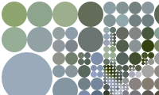
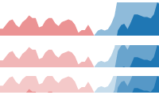
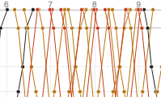
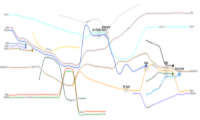
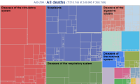

Koalas to the Max
An interactive pointless exploration of circularized koalas created, with love, for Annie Albagli using D3.

Written in collaboration with Jeffrey Heer and Mike Bostock to showcase the power of Protovis.
A Tour through the Visualization Zoo
A survey of powerful visualization techniques, from the obvious to the obscure.Written in collaboration with Jeffrey Heer and Mike Bostock to showcase the power of Protovis.

Protovis is no longer actively development.
Protovis
A free and open source JavaScript library for declerativly building web-native visualizations.Protovis is no longer actively development.

Submited as the final project of CS448b Data Visualization instructed by Jeffrey Heer
Fall 2009
PlotWeaver
A direct maipulation editing tool for creating xkcd/657 style movie plot visualizations.Submited as the final project of CS448b Data Visualization instructed by Jeffrey Heer
Fall 2009

Submited as assignment 3 of CS448b Data Visualization instructed by Jeffrey Heer
Fall 2009
DeathMap
An interactive visualisation of the 2007 England and Wales death registry.Submited as assignment 3 of CS448b Data Visualization instructed by Jeffrey Heer
Fall 2009
The Benefits of Marriage
An exploration of the question “Who benefits more in (opposite sex) marriage?” by considering lifespan differences between married and single men and women.Data taken from the 2007 England and Wales death registry.
Submited as assignment 2 of CS448b Data Visualization instructed by Jeffrey Heer
Fall 2009